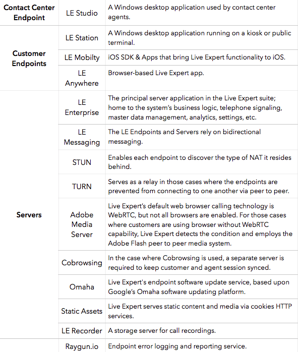
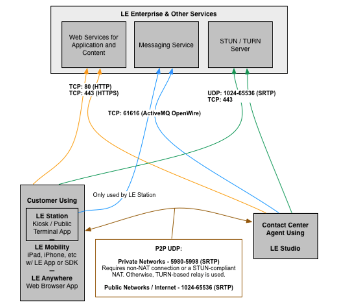
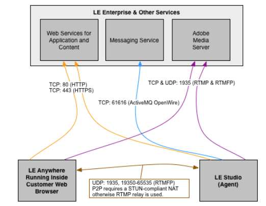
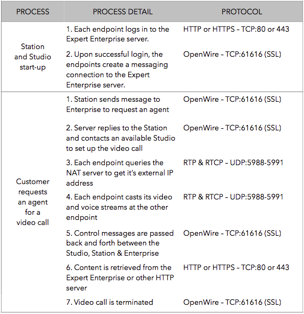
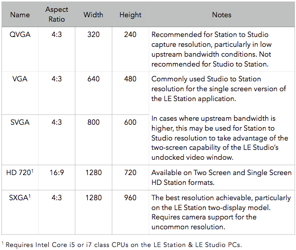
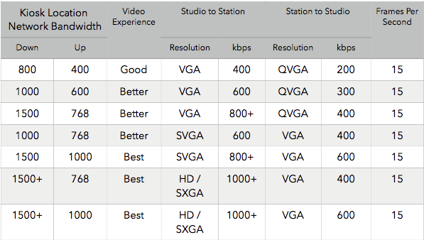
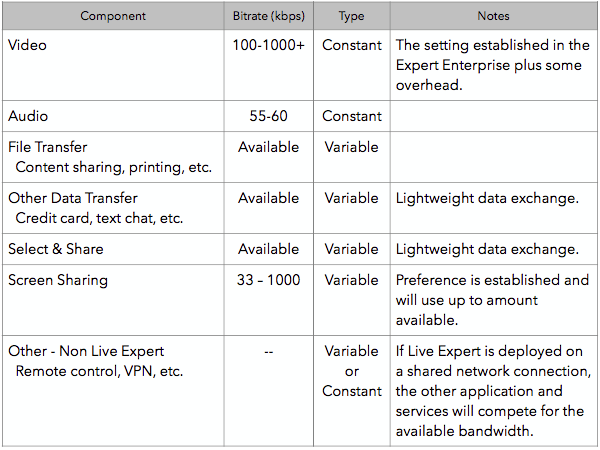
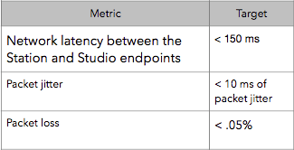
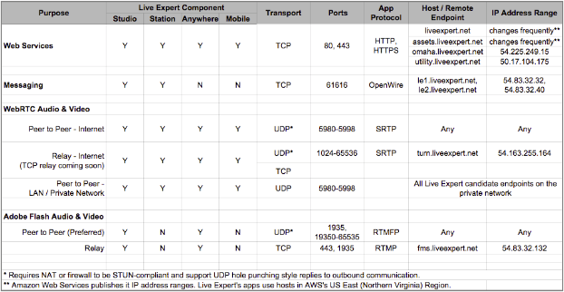

Admin Guide Overview¶
Note
A PDF version of this guide is available for download.
Real time voice and video applications rely on network performance to achieve high quality experiences for their users. The Live Expert Networking Guide provides an overview of the requirements needed to operate its video chat and content sharing features as well as recommendations for various video settings, bandwidth to support preferred video quality, overviews of application processes and more.
Live Expert System¶
The Live Expert system consists of a set of endpoints used by contact center agents, endpoints used by customers and servers to connect the endpoints and operate the service
{kind=link}
Live Expert Calling Session Data Flow¶
LE Station, Mobility, & Anywhere - WebRTC Sessions¶
The following context diagrams show the IP protocols, ports and data flow among the various Live Expert endpoints and servers for an in-call state. These diagrams do not necessarily include static assets, software update servers, etc.
LE Anywhere - Flash Sessions¶
Example Application Process¶
The following table describes two typical Live Expert application processes–a typical LE Station application startup and a typical LE Station video call–to show how the endpoints and server communicate with one another via the protocols and ports described.
{kind=link}
LE Station Video Options¶
Video Capture Resolutions¶
Settings Combinations for Common Bandwidths¶
The following table describes suggested video settings combinations to achieve preferred video quality for various common bandwidths.
Total Bandwidth Requirements¶
RequirementsThe following table provides a list of all of the Live Expert-related media, content and other traffic that should be considered when planning for total bandwidth requirements.
Other Important Network Factors¶
Network latency, jitter and packet loss are other important factors that should be held within control to provide a stable network platform to render a voice and video experience that yields high user satisfaction.
The types of WANs and LANs used in the VOIP network can significantly affect these metrics. The preference for type of network should use the following general protocol.
WAN
Preferred: Wired (DSL, T1, Cable, etc.)
When preferred is not available: Wireless (4G)
LAN
Preferred: Ethernet
When preferred is not available: Wifi
Peer to Peer vs. Relay¶
A substantial amount of development effort is applied to real time voice and video apps to minimize latency: latency in processing pipelines, latency in encoding and decoding parameters, etc. To this objective, peer to peer media is preferred to relayed media. Live Expert uses industry standard methods to attempt to establish peer to peer media, and when those attempts fail, it will failover to a relay server to establish the two way connections. Live Expert customers are encouraged to employ NAT and firewall devices that allow for peer to peer sessions. Cone NATs that are STUN-compliant and compatible with UDP hole punching, therefore, are preferred to symmetric NATs.
Network Protocols, Ports, & Hosts¶
The following table describes the required network transport protocols, application protocols, ports hosts & IP addresses for each of the Live Expert components.
